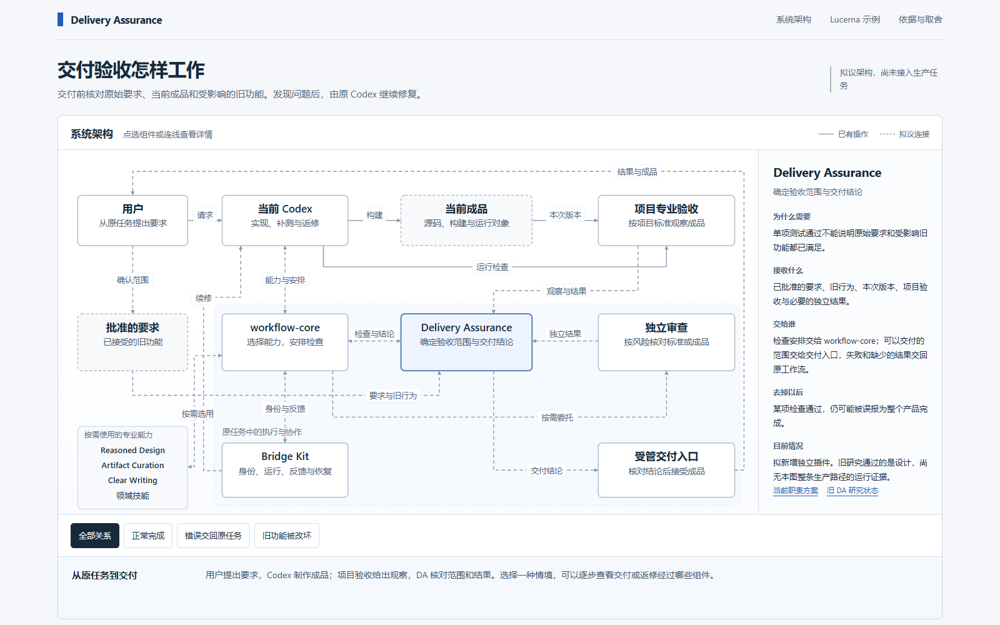
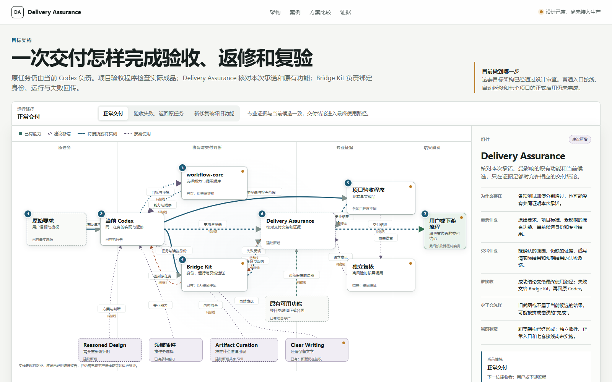

A · GPT-6
86 / 100
实际表现：14 个节点和 16 条逻辑连接完整出现，主次关系清楚，首屏阅读压力较低。
本地真实运行 · 只读比较
两份候选均成功运行，也都通过“首页完整架构”和“成熟中文表达”两项门槛。A 的优势是整体更易读、交互更可靠；B 的优势是状态与职责边界表达更强。
A 的完整架构更容易在第一眼建立系统地图；B 的状态信息更丰富，但中心连线和小标签明显更密。

实际表现：14 个节点和 16 条逻辑连接完整出现，主次关系清楚，首屏阅读压力较低。

实际表现：13 个节点和 18 条逻辑关系完整建模，状态边界更醒目，但中心区更难扫读。
| 评价项 | 权重 | A · GPT-6 | B · GPT-5.6 | 判断依据 |
|---|---|---|---|---|
| 架构准确性与整体可理解性 | 25 | 22.5 | 22.5 | 两边都忠实覆盖核心职责与关系；A 更易读，B 的边界刻画更细。 |
| 中文、内容取舍与读者负担 | 20 | 17 | 16 | A 的首屏可见文字约少 27%，内部工程语言也更少。 |
| 交互是否真正帮助理解 | 15 | 14 | 11.5 | A 有可推进的 19 步情境；B 的关键边线存在指针命中问题。 |
| 视觉层级、密度与留白 | 15 | 13 | 12 | A 更安静；B 的中心图和首屏说明更拥挤。 |
| 证据、状态与可信边界 | 10 | 8 | 9 | B 的可见状态编码更强；A 的文档证据追溯更完整。 |
| 手机体验 | 10 | 7.5 | 6.5 | A 很长但保留拓扑；B 重排简洁，却弱化关系并留下内部横向滚动。 |
| 后续实现与模板复用成本 | 5 | 4 | 4.5 | A 的模板合同更完整；B 的分离式静态结构更轻。 |
| 总分 | 100 | 86 | 82 | 差距来自实际可读性和交互可靠性，不来自候选自评。 |
A 更稳定地保持了“先看懂完整系统，再沿组件、连接和失败路径深入”的设计意图。它的图在桌面端更容易扫读，情境能逐步推进，关键连接也同时支持鼠标和键盘。正式实现时，它较不容易退化成文字卡片或局部流程的集合。
这不表示原型已经证明生产接线成立。正式全量落地前，仍要用一个真实仓库验证候选身份、失败回传和末端消费。
检测数据见 metrics.json，短结论见 COMPARISON.md。两边唯一的 Console 错误都是缺少 favicon 的 404，没有应用逻辑错误或警告。